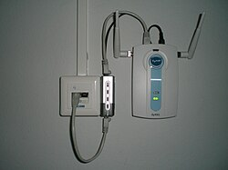

أجهزة الشبكات
مقدمة عن أجهزة الشبكات
أجهزة الشبكات (Network Devices) هي المكونات المادية التي تستخدم لبناء شبكات الحاسوب وتشغيلها. تلعب هذه الأجهزة دورًا حيويًا في توصيل الأجهزة ببعضها البعض، وتوجيه البيانات، وتأمين الشبكة، وتحسين أدائها.
تختلف أجهزة الشبكات في وظائفها وقدراتها وتعقيدها، من الأجهزة البسيطة مثل بطاقات الشبكة والمودمات، إلى الأجهزة المعقدة مثل الراوترات والسويتشات المتقدمة.

أنواع أجهزة الشبكات
فيما يلي شرح مفصل لأهم أجهزة الشبكات المستخدمة في بناء وتشغيل شبكات الحاسوب:
1. بطاقة الشبكة (Network Interface Card - NIC)
بطاقة الشبكة هي المكون الأساسي الذي يسمح للحاسوب بالاتصال بالشبكة. تقوم بتحويل البيانات من الحاسوب إلى إشارات يمكن إرسالها عبر وسائط الشبكة، والعكس.
الخصائص الرئيسية:
- تأتي إما مدمجة في اللوحة الأم أو كبطاقة توسعة.
- تحتوي على عنوان MAC فريد مكون من 48 بت.
- تدعم سرعات مختلفة (10/100/1000 ميجابت/ثانية أو أكثر).
- تتوفر بأنواع مختلفة: سلكية (Ethernet) أو لاسلكية (Wi-Fi) أو بلوتوث.

2. المودم (Modem)
المودم (Modulator-Demodulator) هو جهاز يقوم بتحويل الإشارات الرقمية إلى إشارات تناظرية والعكس، مما يسمح بنقل البيانات عبر خطوط الهاتف أو الكابل أو الأقمار الصناعية.
الأنواع الرئيسية للمودمات:
- مودم الهاتف (Dial-up Modem): يستخدم خطوط الهاتف العادية، وهو بطيء نسبيًا (56 كيلوبت/ثانية).
- مودم DSL: يستخدم خطوط الهاتف ولكن بتقنية مختلفة تسمح بسرعات أعلى (من 1 إلى 100 ميجابت/ثانية).
- مودم الكابل: يستخدم شبكة الكابل التلفزيوني، ويوفر سرعات عالية (من 10 إلى 1000 ميجابت/ثانية).
- مودم الألياف البصرية: يستخدم الألياف البصرية، ويوفر أعلى السرعات (من 100 ميجابت/ثانية إلى عدة جيجابت/ثانية).
3. الهاب (Hub)
الهاب هو جهاز بسيط يستخدم لربط عدة أجهزة في شبكة محلية. يعمل في الطبقة الفيزيائية من نموذج OSI، ويقوم بإرسال البيانات الواردة إلى جميع الأجهزة المتصلة به.
خصائص الهاب:
- جهاز غير ذكي (لا يحتفظ بجدول عناوين).
- يرسل البيانات إلى جميع المنافذ (البث).
- يستهلك عرض النطاق الترددي بشكل غير فعال.
- لا يوفر أي حماية أو خصوصية للبيانات.
- أصبح نادر الاستخدام حاليًا، وتم استبداله بالسويتشات.
4. السويتش (Switch)
السويتش هو جهاز متطور يستخدم لربط عدة أجهزة في شبكة محلية. يعمل في طبقة الوصلة من نموذج OSI، ويقوم بتوجيه البيانات فقط إلى الجهاز المقصود.
خصائص السويتش:
- جهاز ذكي يحتفظ بجدول عناوين MAC.
- يرسل البيانات فقط إلى المنفذ المقصود (التبديل).
- يستخدم عرض النطاق الترددي بكفاءة.
- يوفر مستوى أعلى من الأمان والخصوصية مقارنة بالهاب.
- يدعم تقنيات متقدمة مثل VLAN و QoS.
أنواع السويتشات:
- السويتشات غير المدارة (Unmanaged Switches): سهلة الاستخدام وتعمل بشكل تلقائي، مناسبة للشبكات الصغيرة.
- السويتشات المدارة (Managed Switches): توفر إمكانيات إدارة وتكوين متقدمة، مناسبة للشبكات المتوسطة والكبيرة.
- السويتشات الذكية (Smart Switches): توفر بعض إمكانيات الإدارة بسعر أقل من السويتشات المدارة.
5. الراوتر (Router)
الراوتر هو جهاز متقدم يستخدم لربط شبكتين أو أكثر معًا، وتوجيه البيانات بينهما. يعمل في طبقة الشبكة من نموذج OSI، ويستخدم عناوين IP لتوجيه البيانات.
خصائص الراوتر:
- يربط بين شبكات مختلفة (مثل الشبكة المحلية والإنترنت).
- يحتفظ بجدول توجيه يحدد المسار الأفضل للبيانات.
- يوفر وظائف أمان مثل جدار الحماية (Firewall).
- يدعم بروتوكولات التوجيه مثل RIP و OSPF و BGP.
- يمكن أن يوفر خدمات مثل DHCP و NAT.
أنواع الراوترات:
- راوترات المنزل والمكاتب الصغيرة: بسيطة وسهلة الاستخدام، توفر اتصالًا بالإنترنت لعدد محدود من الأجهزة.
- راوترات الشركات: متطورة وقوية، توفر إمكانيات متقدمة للشبكات الكبيرة.
- راوترات الحافة (Edge Routers): تربط بين شبكة المؤسسة والإنترنت.
- راوترات النواة (Core Routers): تستخدم في قلب شبكات مزودي خدمة الإنترنت.
6. نقطة الوصول اللاسلكية (Wireless Access Point - WAP)
نقطة الوصول اللاسلكية هي جهاز يسمح للأجهزة اللاسلكية بالاتصال بشبكة سلكية. تعمل كجسر بين الشبكة السلكية واللاسلكية.
خصائص نقطة الوصول اللاسلكية:
- توفر اتصالًا لاسلكيًا للأجهزة المحمولة.
- تدعم معايير Wi-Fi المختلفة (802.11a/b/g/n/ac/ax).
- توفر تغطية لاسلكية في منطقة محددة.
- يمكن استخدام عدة نقاط وصول لتوسيع التغطية.
- تدعم ميزات أمان مثل WPA2/WPA3.
ملاحظة: العديد من راوترات المنزل والمكاتب الصغيرة تجمع بين وظائف الراوتر والسويتش ونقطة الوصول اللاسلكية في جهاز واحد.
7. جدار الحماية (Firewall)
جدار الحماية هو جهاز أو برنامج يراقب ويتحكم في حركة البيانات الداخلة والخارجة من الشبكة، ويحميها من التهديدات الخارجية.
أنواع جدران الحماية:
- جدران الحماية البرمجية: برامج تعمل على أجهزة الحاسوب.
- جدران الحماية المادية: أجهزة مخصصة لحماية الشبكة.
- جدران الحماية المدمجة: مدمجة في أجهزة أخرى مثل الراوترات.
وظائف جدار الحماية:
- تصفية حزم البيانات بناءً على قواعد محددة.
- منع الوصول غير المصرح به إلى الشبكة.
- مراقبة وتسجيل محاولات الاختراق.
- توفير خدمات VPN للاتصال الآمن عن بعد.

8. البوابة (Gateway)
البوابة هي جهاز يربط بين شبكتين مختلفتين تستخدمان بروتوكولات مختلفة. تعمل في جميع طبقات نموذج OSI، وتقوم بترجمة البروتوكولات بين الشبكات.
أنواع البوابات:
- بوابة البروتوكول: تترجم بين بروتوكولات مختلفة.
- بوابة التطبيق: تعمل على مستوى التطبيقات مثل البريد الإلكتروني أو نقل الملفات.
- البوابة الافتراضية: هي الراوتر الذي يوجه البيانات خارج الشبكة المحلية.
9. المكرر (Repeater)
المكرر هو جهاز بسيط يستخدم لتقوية الإشارة وتمديد مسافة الشبكة. يعمل في الطبقة الفيزيائية من نموذج OSI.
خصائص المكرر:
- يستقبل الإشارة الضعيفة ويعيد إرسالها بقوة أكبر.
- لا يقوم بأي معالجة للبيانات.
- يستخدم لتمديد مسافة الشبكة السلكية أو اللاسلكية.
10. الجسر (Bridge)
الجسر هو جهاز يستخدم لربط قطاعين من نفس الشبكة. يعمل في طبقة الوصلة من نموذج OSI، ويقوم بتصفية حركة البيانات بين القطاعين.
خصائص الجسر:
- يحتفظ بجدول عناوين MAC.
- يسمح فقط بمرور البيانات المقصودة للقطاع الآخر.
- يقلل من الازدحام في الشبكة.
- يمكن أن يربط بين أنواع مختلفة من الشبكات (مثل Ethernet و Wi-Fi).
اختيار أجهزة الشبكات المناسبة
يعتمد اختيار أجهزة الشبكات المناسبة على عدة عوامل، منها:
- حجم الشبكة: عدد الأجهزة المتصلة.
- نوع الشبكة: سلكية أو لاسلكية أو هجينة.
- متطلبات الأداء: سرعة نقل البيانات وزمن الاستجابة.
- متطلبات الأمان: مستوى الحماية المطلوب.
- الميزانية: التكلفة المتاحة للأجهزة والصيانة.
- قابلية التوسع: إمكانية توسيع الشبكة في المستقبل.
صيانة أجهزة الشبكات
تحتاج أجهزة الشبكات إلى صيانة دورية لضمان عملها بكفاءة واستمرارية، وتشمل الصيانة:
- تحديث البرامج الثابتة (Firmware) بانتظام.
- مراقبة أداء الأجهزة وتحديد المشكلات المحتملة.
- تنظيف الأجهزة من الغبار والأوساخ.
- التأكد من التهوية المناسبة لمنع ارتفاع درجة الحرارة.
- توثيق إعدادات الأجهزة والتغييرات التي تتم عليها.
خلاصة
تعتبر أجهزة الشبكات العمود الفقري لأي شبكة حاسوبية، فهي تمكن الأجهزة من الاتصال وتبادل البيانات بشكل فعال وآمن. فهم وظائف وخصائص هذه الأجهزة يساعد في تصميم وتنفيذ وصيانة شبكات فعالة تلبي احتياجات المستخدمين.
مع تطور تكنولوجيا الشبكات، تتطور أيضًا أجهزة الشبكات لتوفير سرعات أعلى وأمان أفضل وميزات متقدمة. لذلك، من المهم مواكبة التطورات الجديدة في هذا المجال.